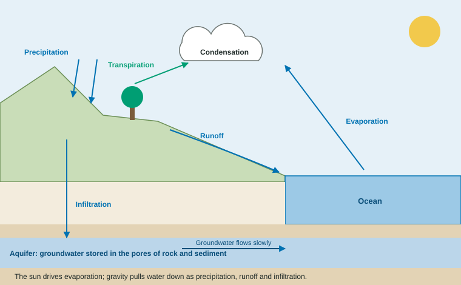

Earth has about the same amount of water today as it had when dinosaurs were alive. The water is not used up; it moves. The hydrologic cycle, or water cycle, is the path water takes among the ocean, the air, the land, ice and the ground. It also carries heat around the planet and carries nutrients and pollutants from land into rivers and lakes.
Two engines: the sun and gravity
The sun lifts water up; gravity brings it down.

- Evaporation: sunlight heats water, and liquid becomes vapor. Most evaporation is from the ocean.
- Transpiration: plants draw water up from their roots and release vapor through small openings in their leaves. Evaporation plus transpiration is called evapotranspiration.
- Condensation: rising vapor cools and turns into tiny droplets, forming clouds.
- Precipitation: droplets join and fall as rain, snow, sleet or hail.
- Runoff: water that flows over the land surface into streams, rivers and lakes, and eventually back to the ocean.
- Infiltration: water that soaks into the soil and moves down to become groundwater.
Where the water is
| Reservoir | Share of all water (rounded) | Fresh or salty |
|---|---|---|
| Oceans | about 96.5% | salty |
| Ice caps and glaciers | about 1.7% | fresh, frozen |
| Groundwater | about 1.7% | a little over half salty, the rest fresh |
| Lakes, rivers, soil moisture, air, ground ice, living things | about 0.04% together | mostly fresh |
Source: USGS, "Where is Earth's Water?", after Shiklomanov (1993), rounded. The lesson is that freshwater that is liquid and easy to reach is a tiny share of the total, which is why water can be scarce on a planet covered in it.
Worked example: a percent of a quantity. Earth has about km³ of water. About 1.7% is groundwater. How much is that?
Setup:
Answer: km³, about 24 million cubic kilometers. Divide the percent by 100 before you multiply; multiplying by 1.7 would give an answer 100 times too large.
Groundwater and aquifers
An aquifer is a layer of rock or sediment (sand, gravel, sandstone) whose pores and cracks hold water and let it move. Groundwater is not an underground lake; it fills the spaces between grains, like water in a sponge, and moves slowly. Water that infiltrates near the surface may reach a well in weeks. Water in deep aquifers can be thousands of years old.
That slowness matters. When people pump water out of an aquifer faster than infiltration refills it, the water level drops, wells must be drilled deeper, and some run dry. A deep aquifer emptied in decades may take thousands of years to refill.
How land use changes the cycle
Worked example: where rain goes. Of 100 cm of yearly rain on a forested hillside, 50 cm returns to the air by evaporation and transpiration, 10 cm runs off and 40 cm infiltrates. What percent infiltrates? Setup: = 40%. On a nearby parking lot, runoff is 70 cm and infiltration only 5 cm.
Pavement and roofs seal the ground. The chain: less infiltration → more runoff → water reaches streams faster → higher floods during storms, and less water refills the groundwater. Plants slow water down and help it soak in.
Forests also put water back into the air. In large rainforests a big share of the rain is water the forest itself transpired, so clearing a large area can make the region drier.
Name the arrow
Liquid to vapor: evaporation (or transpiration if it leaves a plant). Vapor to liquid: condensation. Falling from clouds: precipitation. Over the surface: runoff. Down into the ground: infiltration.